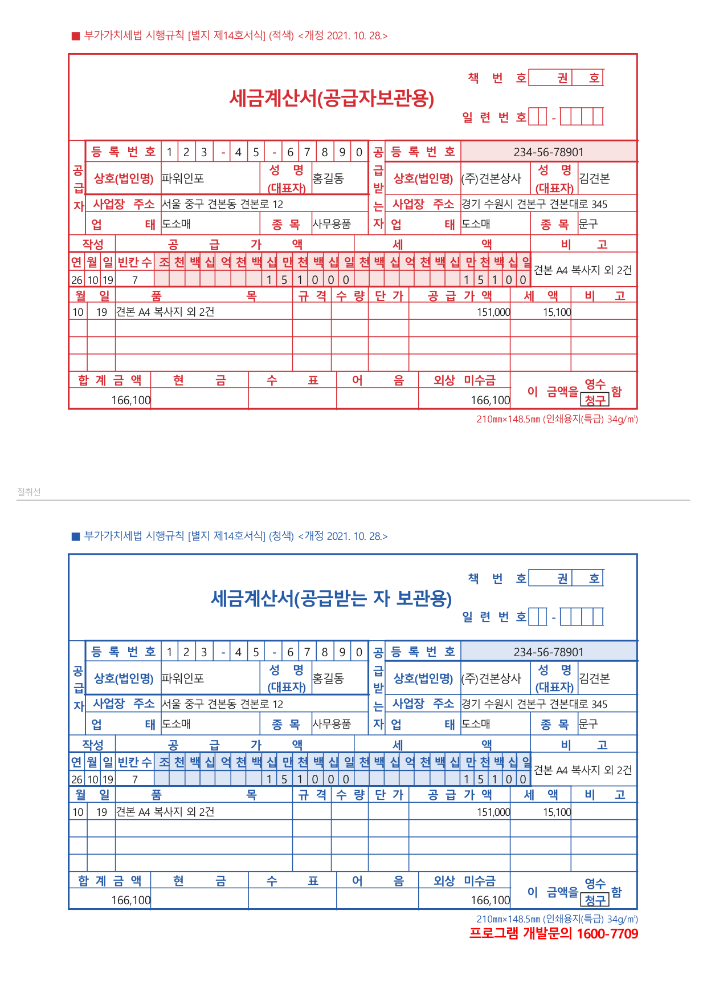

세금계산서 용지가 떨어져서 급하게 찾고 계신가요? 무료 프로그램 판매왕 프로는 세금계산서를 A4 백지에 양식째 인쇄합니다. 용지를 따로 사지 않으셔도 됩니다.
판매왕 프로 무료 받기
판매왕 프로의 세금계산서 인쇄는 종이로 주고받으실 때 쓰는 기능입니다. 전자세금계산서 발급 의무가 있는 사업자는 국세청 홈택스 등에서 전자로 발급하셔야 합니다.
거래처·재고·전표·거래명세서·세금계산서를 한 프로그램에서 하실 수 있고, 값은 받지 않습니다. 등록도 무료입니다.
직원마다 아이디를 따로 주고 메뉴별로 쓸 수 있는 곳을 나눌 수도 있습니다. 무료 프로그램에서는 보기 드문 기능입니다.
윈도우 10, 윈도우 11 PC에서 씁니다. 받는 곳에서 PanmaewangPro5.0_Setup.exe를 누르시면 됩니다.
판매왕 프로 무료 받기 휴대폰에서 거래명세서 바로 찍기